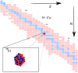

chlorine-36

Definition: Chlorine-36 (36Cl) is an isotope of chlorine. Chlorine has two stable isotopes and one naturally occurring radioactive isotope, the cosmogenic isotope 36Cl. Its half-life is 301,300 ± 1,500 years. 36Cl decays primarily (98%) by beta-minus decay to 36Ar, and the balance to 36S.Trace amounts of radioactive 36Cl exist in the environment, in a ratio of about (7–10) × 10−13 to 1 with stable chlorine isotopes. This corresponds to a concentration of approximately 1 Bq/(kg Cl).
Source: Wikipedia
Wikipedia Page
Wikidata Page